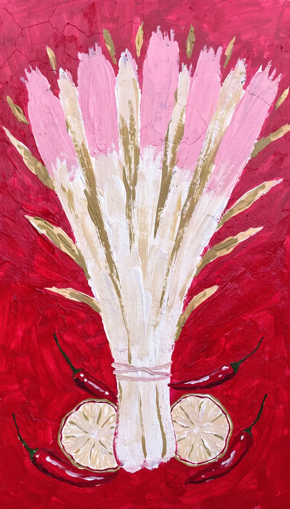

Phở, Bún und Curry an der Lister Meile


Lister Meile 67Mo–So 11:30–22:00
Vietnamesische Street Kitchen in Hannover-List. Ab 11:30 Mittagstisch, abends bis 22:00. Iss drinnen an der Pfingstrosenwand, draußen in der Fußgängerzone, nimm’s mit oder lass liefern.
Lister Meile 67, 30161 Hannover
Fotos von links: CODO - Street Kitchen, Per Hol, bayardo alejandro ramirez gonzalez, Hayashi yui · Google Maps
Mittags schnell auf die Hand. Abends so lange du willst.
Drinnen helle Holztische und rote Hocker vor der Pfingstrosenwand. Wenn die Sonne scheint, sitzt du draußen direkt an der Lister Meile.
Was es gibt
Eine Auswahl aus der Karte. Die komplette Karte mit Preisen liegt vor Ort aus und wird dir beim Bestellen am Telefon vorgelesen.
Suppe & Phở
- Phở Bò TrộnPhở mit Rind, gemischt statt in Brühe
- Suppe mit Tofu und Brokkolimit Frühlingszwiebeln, würzig
Bún & Salate
- Bún mit HühnchenReisnudeln mit Zitronengras-Hühnchen
- Salat mit Hähnchen und ErdnüssenHähnchen, Erdnüsse, frischer Salat
Aus Wok und Topf
- Gebratene Nudeln mit Gemüsemit Karotten, in der schwarzen Schale
- Curry mit Reisrotes Curry mit Jasminreis
- Knuspriges Hähnchen mit Reismit Gemüse und dunkler Soße
Zum Anfang
- Frühlingsrollen mit Dipknusprig, mit Salat
Getränke & Süßes
- Hausgemachte Limonadefrisch im Glas
- Kaffee, Bier und Weinzum Essen oder danach
- Dessertswas es gerade gibt, steht vor Ort
So kommt es auf den Tisch



KI-BildZitronengras gehört ans Hühnchen im Bún, Limette und Chili kommen extra dazu.
22:00
Jeden Tag dieselben Zeiten
Mittagstisch ab 11:30, Abendessen bis 22:00 Uhr. Auch am Wochenende, auch sonntags.
- Mo
- Di
- Mi
- Do
- Fr
- Sa
- So
Mitten in der Fußgängerzone
Lister Meile 6730161 Hannover
Die Lister Meile beginnt am Hauptbahnhof, Ausgang Raschplatz. Von dort gehst du sie zu Fuß hinauf, bis zur Hausnummer 67.
Vor der Fensterfront stehen bei gutem Wetter Tische draußen.
Route in Google MapsBestellen, abholen, reservieren
Alles über eine Nummer. Ruf an, sag was du willst und wann du kommst.
0511 8993689- Adresse
- Lister Meile 67, 30161 Hannover
- Geöffnet
- Mo–So 11:30–22:00
- Vor Ort
- Drinnen an der Pfingstrosenwand, draußen an der Meile
- Außer Haus
- Abholen und Lieferung